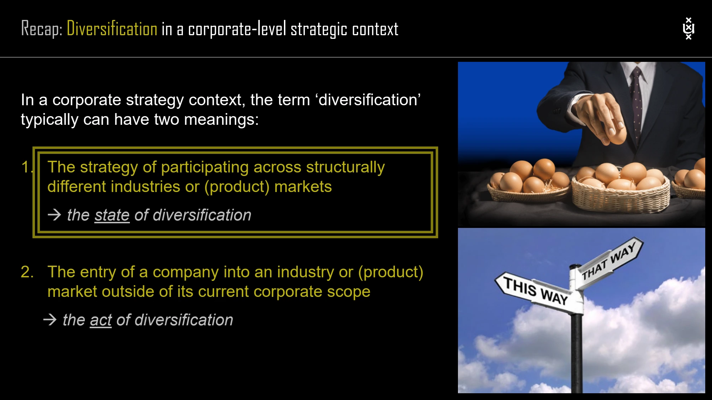

The framework
| Type | Relationship | Key distinction |
|---|---|---|
| Upstream / backward | A new business provides inputs to existing businesses. | The firm moves toward suppliers. |
| Downstream / forward | A new business uses the output of existing businesses. | The firm moves toward distribution or customers. |
| Related horizontal | A new product serves the existing customer base and draws on shared or transferable elements. | Customer overlap is accompanied by substantive relatedness. |
| Concentric | A new product uses common capabilities or resources to serve a different segment. | The customer group differs, but a meaningful commonality remains. |
| Unrelated horizontal | A new type of product serves the existing customer base without substantive resource or activity relatedness. | The customer overlap alone does not make it related. |
| Conglomerate | A new, unrelated product or business serves a new customer group. | Neither the business logic nor the customer group supplies the relevant connection. |
Key distinctions
What counts as related?
The lecture emphasizes activities, resources, skills or products shared or transferred among units. These links can include shared activities and resources, transfers of intangible knowledge or a vertical input–output relationship. Similar product labels or the same customer list do not establish them.
Why diversify?
The lecture lists growth constraints in current markets, attractive returns elsewhere, available resources, potential synergies, market power, integrated customer demand and risk spreading. These are motives to investigate, not proof that entry creates value.
How to use it
- Identify the direction of the proposed scope change.
- Describe the concrete relationship with existing businesses.
- Separate the motive for entry from evidence that the relationship can create value.
Keep in mind
Do not reverse upstream/backward and downstream/forward. Also distinguish diversification into a new business from expansion within an existing one.
Does serving the same customer imply related diversification?
Reveal the explanation
No. The course requires substantive links in activities, resources, skills or products.
Read the classroom original
Complete pages from the supplied lecture slides. Select a page to read, enlarge or browse its extracted text. Page numbers refer to the PDF’s physical page order.

 SESSION 3 · PAGE 41
SESSION 3 · PAGE 41Types of diversification
 SESSION 3 · PAGE 42
SESSION 3 · PAGE 42Alternative classification
 SESSION 3 · PAGE 45
SESSION 3 · PAGE 45Upstream diversification
 SESSION 3 · PAGE 46
SESSION 3 · PAGE 46Downstream diversification
 SESSION 3 · PAGE 48
SESSION 3 · PAGE 48Horizontal diversification
 SESSION 3 · PAGE 50
SESSION 3 · PAGE 50Concentric diversification
 SESSION 3 · PAGE 53
SESSION 3 · PAGE 53Conglomerate diversification
 SESSION 3 · PAGE 56
SESSION 3 · PAGE 56Pure types of diversification
 SESSION 3 · PAGE 59
SESSION 3 · PAGE 59Stages of growth
 SESSION 3 · PAGE 60
SESSION 3 · PAGE 60Reasons for diversification
 SESSION 4 · PAGE 19
SESSION 4 · PAGE 19